일반기계기사 (2013-09-28 기출문제)
1과목: 재료역학
1. 단면적이 1cm2, 탄성계수가 200㎬, 길이가 10m인 케이블이 장력을 받아 길이가 1㎜만큼 늘어났다. 장력의 크기는 몇 N인가?
- 1000
- 2000
- 3000
- 4000
(정답률: 57%)
2. 한 변의 길이가 10㎜인 정사각형 단면의 막대가 있다. 온도를 60℃ 상승시켜서 길이가 늘어나지 않게 하기 위해 8kN의 힘이 필요하다. 막대의 선팽창계수(α)는? (단, 탄성계수 E=200 ㎬ 이다.)
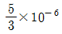
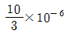
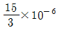
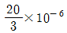
(정답률: 57%)

3. 그림과 같이 직선적으로 변하는 불균일 분포하중을 받고 있는 단순보의 전단력선도는?
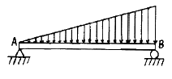
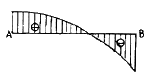
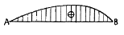
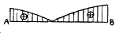
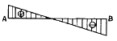
(정답률: 46%)
4. 그림과 같이 단순 지지보가 B점에서 반시계 방향의 모멘트를 받고 있다. 이때 최대의 처짐이 발생하는 곳은 A점으로부터 얼마나 떨어진 거리인가?
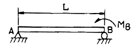
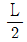
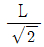
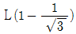
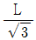
(정답률: 39%)
5. 상단이 고정된 원추 형체의 단위체적에 대한 중량을 γ라 하고 원추의 밑면의 지름이 d, 높이가 ℓ일 때 이 재료의 최대 인장응력을 나타낸 식은?
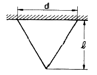
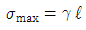
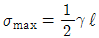
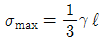
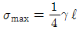
(정답률: 54%)
6. 그림과 같은 외팔보에 저장된 굽힘 변형에너지는? (단, 탄성계수는 E이고, 단면의 관성모멘트는 I이다. )
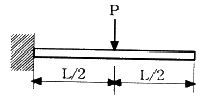
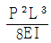
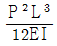
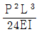
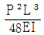
(정답률: 33%)
7. 다음 그림과 같이 연속보가 균일 분포하중(q)을 받고 있을 때, A점의 반력은?
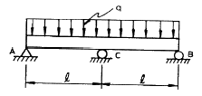
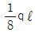
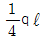
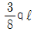
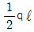
(정답률: 32%)
8. 단면 계수에 대한 설명으로 틀린 것은?
- 차원(dimension)은 길이의 3승이다.
- 대칭 도형의 단면 계수 값은 하나밖에 없다.
- 도형의 도심축에 대한 단면 2차모멘트와 면적을 서로 곱한 것을 말한다.
- 단면 계수를 크게 설계하면 보가 강해진다.
(정답률: 40%)
9. 길이가 ℓ인 외팔보에서 그림과 같이 삼각형 분포하중을 받고 있을 때 최대 전단력과 최대 굽힘모멘트는?
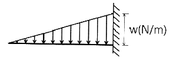
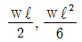
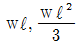
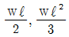
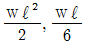
(정답률: 49%)
10. 그림에 표시한 단순 지지보에서의 최대 처짐량은? (단, 보의 굽힘 강성 EI는 일정하고, 자중은 무시한다.)
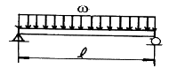
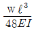
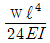
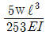
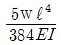
(정답률: 58%)
11. 그림과 같이 6㎝×12㎝ 단면의 직사각형보가 단순 지지되어 B단면에 집중하중 5000N을 받고 있다. B단면에서의 최대굽힘응력은 약 몇 ㎫ 인가?
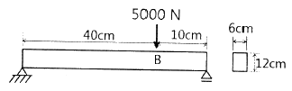
- 400
- 0.463
- 2.78
- 57600
(정답률: 44%)
12. 바깥지름 50㎝, 안지름 30㎝의 속이 빈 축은 동일한 단면적을 가지며 같은 재질의 원형축에 비하여 약 몇 배의 비틀림 모멘트에 견딜 수 있는가?
- 1.7배
- 1.4배
- 1.2배
- 0.9배
(정답률: 46%)
13. 평균 지름 d = 60㎝, 두께 t = 3㎜인 강관이 P = 2.1㎫의 내압을 받고 있다. 이 관 속에 발생하는 원환응력으로 인한 지름의 증가량은 약 몇 ㎜ 인가? (단, 탄성 계수 E = 210 ㎬이다.)
- 0.3
- 0.6
- 1.2
- 6
(정답률: 34%)
14. 지름 30㎜의 환봉 시험편에서 표점거리를 10㎜로 하고 스트레인 게이지를 부착하여 신장을 측정한 결과 인장하중 25kN에서 신장 0.0418㎜가 측정되었다. 이때의 지름은 29.97㎜이었다. 이 재료의 포아송 비(ν)는?
- 0.239
- 0.287
- 0.0239
- 0.0287
(정답률: 51%)
15. 직사각형 단면(가로 3m, 세로 2m)의 단주에 150kN 하중이 중심에서 1m만큼 편심되어 작용할 때 이 부재 AC에서 생기는 최대 인장응력은 몇 ㎪ 인가?
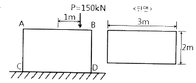
- 25
- 50
- 87.5
- 100
(정답률: 29%)
16. 그림과 같이 길이가 동일한 2개의 기둥 상단에 중심 압축하중 2500N이 작용할 경우 전체 수축량은 약 몇 ㎜ 인가? (단, 단면적 A1 = 1000mm2 , A2 = 2000mm2 , 길이 L = 300㎜, 재료의 탄성계수 E = 90 ㎬ 이다. )
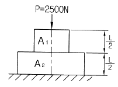
- 0.625
- 0.0625
- 0.00625
- 0.000625
(정답률: 53%)
17. 단면적 A, 탄성계수(Young’s Modulus) E, 길이 L1인 봉재가 그림과 같이 천정에 매달려 있다. 이 부재의 B점에 하중 P가 작용될 때 B점의 하중방향 변위는?
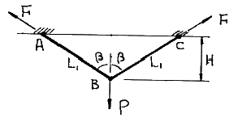
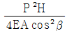
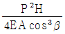
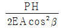
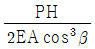
(정답률: 10%)
18. 비틀림 모멘트 T를 받고 봉의 길이 L인 부재에 발생하는 순수전단(pure shear) 상태에서의 비틀림 변형에너지 U는? (단, 비틀림 강성은 GJ 이다.)
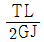
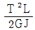
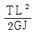
(정답률: 54%)
19. 하중을 받고 있는 기계요소의 응력 상태는 아래와 같다. 선분 (a-a)에서 수직응력(σn)과 전단응력(τ)은?
- σn = 10㎫, τ = 7.5㎫
- σn = -3.5㎫, τ = -7.5㎫
- σn = 10㎫, τ = -6㎫
- σn = -3.5㎫, τ = 6㎫
(정답률: 21%)
20. 그림과 같은 풀리에 장력이 작용하고 있을 때 풀리의 회전수가 100rpm이라면 전달 동력은 몇 kW인가?
- 2.14
- 16.55
- 8.32
- 4.19
(정답률: 39%)
2과목: 기계열역학
21. 터빈의 효율에 대한 정의로 맞는 것은?
- 실제 과정의 일 ÷ 등엔트로피 과정의 일
- 등엔트로피 과정의 일 ÷ 실제 과정의 일
- 실제 과정의 일 × 등엔트로피 과정의 일
- (등엔트로피 과정의 일 ÷ 실제 과정의 일)2
(정답률: 35%)
22. 흑체의 온도가 20℃에서 80℃로 되었다면 방사하는 복사에너지는 약 몇 배가 되는가?
- 1.2
- 2.1
- 4.0
- 5.0
(정답률: 29%)
23. 냉동용량 23 kW인 냉동기의 성능계수가 3이다. 이때 필요한 동력은 몇 kW인가?
- 4.4
- 5.7
- 6.7
- 7.7
(정답률: 53%)
24. 이상기체 1kg을 300K, 100㎪ 에서 500K 까지 “PVn = 일정”의 과정(n = 1.2)을 따라 변화시켰다. 기체의 비열비는 1.3, 기체상수는 0.287 KJ/kg·K라고 가정한다면 이 기체의 엔트로피 변화량은 약 몇 KJ/K 인가?
- -0.244
- -0.287
- -0.344
- -0.373
(정답률: 29%)
25. 어떤 냉동기에서 0℃의 물로 0℃의 얼음 2ton을 만드는데 180 MJ의 일이 소요된다면 이 냉동기의 성능계수는? (단, 물의 융해열은 334 KJ/kg 이다.)
- 2.⑤
- 2.32
- 2.65
- 3.71
(정답률: 43%)
26. 증기압축 냉동사이클에 대한 설명 중 맞는 것은?
- 팽창밸브를 통한 과정은 등엔트로피 과정이다.
- 압축기 단열효율은 100%보다 클 수 있다.
- 응축 온도는 주위 온도보다 낮을 수 있다.
- 성능계수는 1보다 클 수 있다.
(정답률: 35%)
27. 다음 열과 일에 대한 설명 중 맞는 것은?
- 과정에서 열과 일은 모두 경로에 무관하다.
- Watt(W)는 열의 단위이다.
- 열역학 제1법칙은 열과 일의 방향성을 제시한다.
- 사이클에서 시스템의 열전달 양은 곧 시스템이 수행한 일과 같다.
(정답률: 36%)
28. 33 kW의 동력을 내는 열기관이 1시간 동안 하는 일은 약 얼마인가?
- 83600 kJ
- 104500 kJ
- 118800 kJ
- 988780 kJ
(정답률: 51%)
29. 이상랭킨(Rankine) 사이클에서 정적단열과정이 진행되는 곳은?
- 보일러
- 펌프
- 터빈
- 응축기
(정답률: 19%)
30. 다음의 설명 중 틀린 것은?
- 엔트로피는 종량적 상태량이다.
- 과정이 비가역으로 되는 요인에는 마찰, 불구속 팽창, 유한 온도차에 의한 열전달 등이 있다.
- Carnot’cycle은 비가역이므로 모든 과정을 역으로 운전할 수 없다.
- 시스템의 가역과정은 한번 진행된 과정이 역으로 진행될 수 있으며, 그 때 시스템이나 주위에 아무런 변화를 남기지 않는 과정이다.
(정답률: 42%)
31. 질소의 압축성 인자(계수)에 대한 설명으로 맞는 것은?
- 상온 및 상압인 300K, 1기압 상태에서 압축성 인자는 거의 1에 가까워 이상기체의 거동을 보인다.
- 온도에 관계없이 압력이 0에 가까워지면 압축성 인자도 0에 접근한다.
- 압력이 30㎫ 이상인 초고밀도 영역에서 압축성 인자는 항상 1보다 작다.
- 상온 및 상압인 300K, 1기압 상태에서 온도가 증가하면 압축성 인자는 감소한다.
(정답률: 18%)
32. 마찰이 없는 피스톤과 실린더로 구성된 밀폐계에 분자량이 25인 이상기체가 2kg있다. 기체의 압력이 100㎪로 일정할 때 체적이 1m3에서 2m3로 변화한다면 이 과정 중 열 전달량은? (단, 정압비열은 1.0kJ/kg · K이다.)
- 약 150 kJ
- 약 202 kJ
- 약 268 kJ
- 약 300 kJ
(정답률: 36%)
33. 임계점 및 삼중점에 대한 설명으로 옳은 것은?
- 헬륨이 상온에서 기체로 존재하는 이유는 임계 온도가 상온보다 훨씬 높기 때문이다.
- 초임계 압력에서는 두 개의 상이 존재한다.
- 물의 삼중점 온도는 임계 온도보다 높다.
- 임계점에서는 포화액체와 포화증기의 상태가 동일하다.
(정답률: 34%)
34. 한 시간에 3600 kg의 석탄을 소비하여 6⑤0 kW를 발생하는 증기터빈을 사용하는 화력발전소가 있다면, 이 발전소의 열효율은? (단, 석탄의 발열량은 29900 kJ/kg 이다.)
- 약 20%
- 약 30%
- 약 40%
- 약 50%
(정답률: 47%)
35. 상온의 감자를 가열하여 뜨거운 감자로 요리하였다. 감자의 에너지 변동 중 맞는 것은?
- 위치에너지가 증가
- 엔탈피 감소
- 운동에너지 감소
- 내부에너지가 증가
(정답률: 51%)
36. 다음 열역학 성질(상태량)에 대한 설명 중 맞는 것은?
- 엔탈피는 점함수이다.
- 엔트로피는 비가역과정에 대해서 경로함수이다.
- 시스템 내 기체의 열평형은 압력이 시간에 따라 변하지 않을 때를 말한다.
- 비체적은 종량적 상태량이다.
(정답률: 41%)
37. 이상기체가 정압 하에서 엔탈피 증가가 939.4 kJ, 내부에너지 증가는 512.4 kJ 이었으며, 체적은 0.5m3 증가하였다. 이 기체의 압력은?
- 665 ㎪
- 754 ㎪
- 854 ㎪
- 786 ㎪
(정답률: 50%)
38. 증기터빈에서 질량유량이 1.5 kg/s이고, 열손실율이 8.5 kW이다. 터빈으로 출입하는 수증기에 대하여 그림에 표시한 바와 같은 데이터가 주어진다면 터빈의 출력은? (단, 중력 가속도 g = 9.8m/s2 이다. )
- 약 273 kW
- 약 656 kW
- 약 1357 kW
- 약 2616 kW
(정답률: 41%)
39. 피스톤-실린더 내에 공기 3kg이 있다. 공기가 200㎪, 10℃인 상태에서 600 ㎪ 이 될 때까지 “PV1.3 = 일정” 인 과정으로 압축된다. 이 과정에서 공기가 한 일은 약 몇 kJ 인가? (단, 공기의 기체상수는 0.287 kJ/kg · K 이다.)
- -285
- -235
- 13
- 125
(정답률: 38%)
40. 600 kPa, 300 K 상태의 아르곤(argon) 기체 1 kmol이 엔탈피가 일정한 과정을 거쳐 압력이 원래의 1/3배가 되었다. 일반기체상수 = 8.31451 kJ/kmol·K 이다. 이 과정 동안 아르곤(이상기체)의 엔트로피 변화량은?
- 0.782 kJ/K
- 8.31 kJ/K
- 9.13 kJ/K
- 60.0 kJ/K
(정답률: 29%)
3과목: 기계유체역학
41. 그림과 같이 지름 0.1m인 구멍이 뚫린 철판을 지름 0.2m, 유속 10m/s인 분류가 완벽하게 균형이 잡힌 정지상태로 떠받치고 있다. 이 철판의 질량은 약 몇 kg 인가?
- 240
- 320
- 400
- 800
(정답률: 23%)
42. 유체의 밀도 ρ, 속도 V, 압력강하 △P의 조합으로 얻어지는 무차원 수는?
(정답률: 40%)
43. 그림과 같은 원통형 축 틈새에 점성계수 μ=0.51 Pa·s 인 윤활유가 채워져 있을 때, 축을 1800 rpm으로 회전시키기 위해서 필요한 동력은 몇 W 인가? (단, 틈새에서의 유동은 Couette 유동이라고 간주한다.)
- 45.3
- 128
- 4807
- 13610
(정답률: 19%)
44. 수력기울기선(Hydraulic Grade Line : HGL)이 관보다 아래에 있는 곳에서의 압력은?
- 완전 진공이다.
- 대기압보다 낮다.
- 대기압과 같다.
- 대기압보다 높다.
(정답률: 39%)
45. 질량 60g, 직경 64㎜인 테니스공이 25m/s의 속도로 회전하며 날아갈 때, 이 공에 작용하는 공기 역학적 양력은 몇 N인가? (단, 공기의 밀도는 1.23kg/m3, 양력계수는 0.3이다.)
- 0.37
- 0.45
- 1.50
- 3.63
(정답률: 50%)
46. 물이 들어있는 탱크에 수면으로부터 20m 깊이에 지름 5㎝의 노즐이 있다. 이 노즐의 송출계수(discharge coefficient)가 0.9일 때 노즐에서의 유속은 몇 m/s인가?
- 392
- 36.4
- 17.8
- 22.0
(정답률: 41%)
47. 그림과 같은 반지름 R인 원관 내의 층류유동 속도분포는 으로 나타내어진다. 여기서 원관 내 전체가 아닌 0 ≤ r ≤ 인 원형 단면을 흐르는 체적유량 Q를 구하면?
(정답률: 11%)
48. 그림과 같은 지름이 2m 인 원형수문의 상단이 수면으로부터 6m 깊이에 놓여 있다. 이 수문에 작용하는 힘과 힘의 작용점의 수면으로부터 깊이는?
- 188 kN, 6.036 m
- 216 kN, 6.036 m
- 216 kN, 7.036 m
- 188 kN, 7.036 m
(정답률: 44%)
49. 그림과 같이 지름이 D인 물방울을 지름 d인 N개의 작은 물방울로 나누려고 할 때 요구되는 에너지양은? (단, D 》d 이고, 표면장력을 σ 이다.)
(정답률: 15%)
50. 길이가 5㎜이고 발사속도가 400m/s인 탄환의 항력을 10배 큰 모형을 사용하여 측정하려고 한다. 모형을 물에서 실험하려면 발사속도는 몇 m/s이어야 하는가? (단, 공기의 점성계수는 2×10-5 kg/m·s, 밀도는 1.2 kg/m3이고 물의 점성계수는 0.001 kg/m·s 라고 한다.)
- 2.0
- 2.4
- 4.8
- 9.6
(정답률: 36%)
51. 경계층(boundary layer)에 관한 설명 중 틀린 것은?
- 경계층 바깥의 흐름은 포텐셜 흐름에 가깝다.
- 균일 속도가 크고, 유체의 점성이 클수록 경계층의 두께는 얇아진다.
- 경계층 내에서는 점성의 영향이 크다.
- 경계층은 평판 선단으로부터 하류로 갈수록 두꺼워진다.
(정답률: 46%)
52. 다음 중 아래의 베르누이 방정식을 적용시킬 수 있는 조건으로만 나열된 것은?
- 비정상 유동, 비압축성 유동, 점성 유동
- 정상 유동, 압축성 유동, 비점성 유동
- 비정상 유동, 압축성 유동, 점성 유동
- 정상 유동, 비압축성 유동, 비점성 유동
(정답률: 44%)
53. 이상유체 유동에서 원통주위의 순환(circulation)이 없을 때 양력과 항력은 각각 얼마인가? (단, ρ : 밀도, V : 상류 속도, D : 원통의 지름)
- 양력 = ρV2D, 항력 = ρV2D
- 양력 = 0, 항력 = ρV2D
- 양력 = ρV2D, 항력 = ρV2D
- 양력 = 0 , 항력 = 0
(정답률: 37%)
54. 다음 중 차원이 잘못 표시된 것은? (단, M : 질량, L : 길이, T : 시간)
- 압력(pressure) : MLT-2
- 일(work) : ML2T-2
- 동력(power) : ML2T-3
- 동점성계수(kinematic viscosity) : L2T-1
(정답률: 37%)
55. 그림과 같이 입구속도 Uo의 비압축성 유동이 평판 위를 지나 출구에서의 속도분포가 가 된다. 검사체적을 ABCD로 취한다면 단면 CD를 통과하는 유량은? (단, 그림에서 검사체적의 두께는 δ, 평판의 폭은 b이다.)
- Uobδ
(정답률: 13%)
56. 그림과 같이 15℃인 물(밀도는 998.6kg/m3) 이 200kg/min의 유량으로 안지름이 5㎝인 관 속을 흐르고 있다. 이 때 관마찰계수 f는? (단, 액주계에 들어있는 액체의 비중(S)는 3.2이다.)
- 0.02
- 0.04
- 0.07
- 0.09
(정답률: 19%)
57. 안지름 40㎝인 관속을 동점성계수 1.2×10-3m2/s 의 유체가 흐를 때 임계 레이놀즈 수(Reynolds number)가 2300이면 임계속도는 몇 m/s 인가?
- 1.1
- 2.3
- 4.7
- 6.9
(정답률: 52%)
58. 직경이 6㎝이고 속도가 23m/s 인 수평방향 물제트가 고정된 수직평판에 수직으로 충돌한 후 평판면의 주위로 유출된다. 물제트의 유동에 대항하여 평판을 현재의 위치에 유지시키는데 필요한 힘은 약 몇 N 인가?
- 1200
- 1300
- 1400
- 1500
(정답률: 44%)
59. 2차원 흐름 속의 한 점 A에 있어서 유선 간격은 4㎝이고 평균 유속은 12m/s이다. 다른 한 점 B에 있어서의 유선 간격이 2㎝일 때 B의 평균 유속은 얼마인가? (단, 유체의 흐름은 비압축성 유동이다.)
- 24m/s
- 12m/s
- 6m/s
- 3m/s
(정답률: 29%)
60. 그림과 같이 동일한 단면의 U자관에서 상호간 혼합되지 않고 화학작용도 하지 않는 두 종류의 액체가 담겨져 있다. ρA = 1000 kg/m3, ℓA = 50㎝, ρB = 500kg/m3일 때 ℓB는 몇 ㎝인가?
- 100
- 50
- 75
- 25
(정답률: 38%)
4과목: 기계재료 및 유압기기
61. C와 Si의 함량에 따른 주철의 조직을 나타낸 조직분포도는?
- Gueiner, Klingenstein 조직도
- 마우러(Maurer) 조직도
- Fe-C 복평형 상태도
- Guilet 조직도
(정답률: 65%)
62. 강에 적당한 원소를 첨가하면 기계적 성질을 개선하는데 특히 강인성, 저온 충격 저항을 증가시키기 위하여 어떤 원소를 첨가하는 것이 가장 좋은가?
- W
- Ag
- S
- Ni
(정답률: 42%)
63. 강의 표면에 탄소를 침투시켜 표면을 경화시키는 방법은?
- 질화법
- 크로마이징
- 침탄법
- 담금질
(정답률: 66%)
64. 금형부품용도로 사용되고 있는 스프링강의 설명 중 틀린 것은?
- 탄성한도가 높고 피로에 대한 저항이 크다.
- 솔바이트조직으로 비교적 경도가 높다.
- 정밀한 고급 스프링재료에는 Cr-V강을 사용한다.
- 탄소강에 납(Pb), 황(S)을 많이 첨가시킨 강이다.
(정답률: 43%)
65. 탄소강에서 탄소량이 증가하면 일반적으로 감소하는 성질은?
- 전기저항
- 열팽창계수
- 항자력
- 비열
(정답률: 48%)
66. 금속원자의 결정면은 밀러지수(Miller index)의 기호를 사용하여 표시할 수 있다. 다음 그림에서 빗금으로 표시한 입방격자면의 밀러지수는?
- (100)
- (010)
- (110)
- (111)
(정답률: 66%)
67. 과냉 오스테나이트 상태에서 소성가공을 하고 그 후 냉각 중에 마텐자이트화하는 항온열처리 방법을 무엇이라고 하는가?
- 크로마이징
- 오스포밍
- 인덕션하드닝
- 오스템퍼링
(정답률: 38%)
68. 일반적인 합성수지의 공통적인 성질을 설명한 것으로 잘못된 것은?
- 가공성이 크고 성형이 간단하다.
- 열에 강하고 산, 알칼리, 기름, 약품 등에 강하다.
- 투명한 것이 많고, 착색이 용이하다.
- 전기 절연성이 좋다.
(정답률: 54%)
69. 실용금속 중 비중이 가장 작아 항공기 부품이나 전자 및 전기용 제품의 케이스 용도로 사용되고 있는 합금재료는?
- Ni 합금
- Cu 합금
- Pb 합금
- Mg 합금
(정답률: 65%)
70. 흑심가단주철은 풀림온도를 850~950℃와 680~730℃의 2단계로 나누어 각 온도에서 30~40시간 유지시키는데 제2단계 풀림의 목적으로 가장 알맞은 것은?
- 펄라이트 중의 시멘타이트의 흑연화
- 유리 시멘타이트의 흑연화
- 흑연의 구상화
- 흑연의 치밀화
(정답률: 27%)
71. 배관 내에서의 유체의 흐름을 결정하는 레이놀즈수(Reynold’s Number)가 나타내는 의미는?
- 점성력과 관성력의 비
- 점성력과 중력의 비
- 관성력과 중력의 비
- 압력힘과 점성력의 비
(정답률: 65%)
72. 액추에이터의 공급 쪽 관로에 설정된 바이패스 관로의 흐름을 제어함으로써 속도를 제어하는 회로는?
- 미터 인 회로
- 블리드 오프 회로
- 배압 회로
- 플립 플롭 회로
(정답률: 42%)
73. 유압 실린더의 마운팅(mounting) 구조 중 실린더 튜브에 축과 직각방향으로 피벗(pivot)을 만들어 실린더가 그것을 중심으로 회전할 수 있는 구조는?
- 풋 형(foot mounting type)
- 트러니언 형(trunnion mounting type)
- 플랜지 형(flange mounting type)
- 클레비스 형(clevis mounting type)
(정답률: 32%)
74. 그림과 같은 4/3-way 솔레노이드 밸브에서 중립위치의 형식 중 플로트 센터 위치(float center position)에 대한 설명으로 옳은 것은?
- 밸브의 중립위치에서 모든 연결구가 닫혀있다.
- 밸브의 중립위치는 공급라인 P가 두 개의 작업라인 A, B 와 연결되어 있고, 드레인 라인은 막혀있는 상태이다.
- 밸브의 중립위치는 두 개의 작업라인은 막혀있고, 공급라인과 드레인 라인이 연결되어 있다.
- 밸브의 중립위치에서 공급라인 P는 막혀있고, 두 개의 작업라인은 모두 드레인 라인과 연결되어 있는 형태이다.
(정답률: 29%)
75. 유압장치에서 펌프의 무부하 운전 시 특징으로 틀린 것은?
- 펌프의 수명 연장
- 유온 상승 방지
- 유압유 노화 촉진
- 유압장치의 가열 방지
(정답률: 55%)
76. 작동유를 장시간 사용한 후 육안으로 검사한 결과 흑갈색으로 변화하여 있었다면 작동유는 어떤 상태로 추정되는가?
- 양호한 상태이다.
- 산화에 의한 열화가 진행되어 있다.
- 수분에 의한 오염이 발생되었다.
- 공기에 의한 오염이 발생되었다.
(정답률: 53%)
77. 1회전 당의 유량이 40cc인 베인모터가 있다. 공급 유압을 600N/cm2, 유량을 30L/min으로 할 때 발생할 수 있는 최대 토크(torque)는 약 몇 N·m 인가?
- 28.2
- 38.2
- 48.2
- 58.2
(정답률: 36%)
78. 유압기기에서 실(seal)의 요구 조건과 관계가 먼 것은?
- 압축 복원성이 좋고 압축변형이 적을 것
- 체적변화가 적고 내약품성이 양호할 것
- 마찰저항이 크고 온도에 민감할 것
- 내구성 및 내마모성이 우수할 것
(정답률: 66%)
79. 그림과 같이 파일럿 조작 체크밸브를 사용한 회로는 어떤 회로인가?
- 동조 회로
- 시퀀스 회로
- 완전 로크 회로
- 미터 인 회로
(정답률: 42%)
80. 그림과 같은 유압기호의 설명으로 틀린 것은?
- 유압 펌프를 의미한다.
- 1방향 유동을 나타낸다.
- 가변 용량형 구조이다.
- 외부 드레인을 가졌다.
(정답률: 59%)
5과목: 기계제작법 및 기계동력학
81. 방전가공의 설명으로 잘못된 것은?
- 전극 재료는 전기 전도도가 높아야 한다.
- 방전가공은 가공 변질층이 깊고 가공면에 방향성이 있다.
- 초경공구, 담금질강, 특수강 등도 가공할 수 있다.
- 경도가 높은 공작물의 가공이 용이하다.
(정답률: 49%)
82. 용접작업을 할 때 금속의 녹는 온도가 가장 낮은 것은?
- 연강
- 주철
- 동
- 알루미늄
(정답률: 37%)
83. 수정 또는 유리로 만들어진 것으로 광파 간섭 현상을 이용한 측정기는?
- 공구 현미경
- 실린더 게이지
- 옵티컬 플랫
- 요한슨식 각도게이지
(정답률: 57%)
84. 두께 t=1.5㎜, 탄소 C=0.2% 의 경질탄소 강판에 지름 25㎜의 구멍을 펀치로 뚫을 때 전단하중 P=4500N 이었다. 이 때의 전단강도는?
- 약 19.1 N/mm2
- 약 31.2 N/mm2
- 약 38.2 N/mm2
- 약 62.4 N/mm2
(정답률: 49%)
85. 전해연마의 특징 설명 중 틀린 것은?
- 복잡한 형상도 연마가 가능하다.
- 가공 면에 방향성이 없다.
- 탄소량이 많은 강일수록 연마가 용이하다.
- 가공변질 층이 나타나지 않으므로 평활한 면을 얻을 수 있다.
(정답률: 43%)
86. 구성인선(built-up edge)이 생기는 것을 방지하기 위한 대책으로 틀린 것은?
- 바이트 윗면 경사각을 크게 한다.
- 절삭 속도를 크게 한다.
- 윤활성이 좋은 절삭유를 준다.
- 절삭 깊이를 크게 한다.
(정답률: 57%)
87. 지름 10㎜의 드릴로 연강판에 구멍을 뚫을 때 절삭속도가 62.8m/min 이라면 드릴의 회전수는 약 얼마인가?
- 1000 rpm
- 2000 rpm
- 3000 rpm
- 4000 rpm
(정답률: 47%)
88. 엠보싱(embossing)은 프레스가공 분류 중 어떤 가공에 해당되는가?
- 전단가공(shearing)
- 압축가공(squeezing)
- 드로잉가공(drawing)
- 절삭가공(cutting)
(정답률: 43%)
89. 다음 특수가공 중 화학적 가공의 특징에 대한 설명으로 틀린 것은?
- 재료의 강도나 경도에 관계없이 가공할 수 있다.
- 변형이나 거스러미가 발생하지 않는다.
- 가공경화 또는 표면변질 층이 발생한다.
- 표면 전체를 한번에 가공할 수 있다.
(정답률: 30%)
90. 피스톤링, 실린더 라이너 등의 주물을 주조하는데 쓰이는 적합한 주조법은?
- 셀 주조법
- 탄산가스 주조법
- 원심 주조법
- 인베스트먼트 주조법
(정답률: 51%)
91. 자동차가 경사진 30도 비탈길에 주차되어 있다. 미끄러지지 않기 위해서는 노면과 바퀴와의 마찰계수 값이 얼마 이상이어야 하는가?
- 0.500
- 0.578
- 0.366
- 0.122
(정답률: 33%)
92. 그림과 같은 진동계에서 임계감쇠치(Ccr)는? (단, 막대의 질량은 무시한다.)
(정답률: 12%)
93. 스프링과 질량으로 구성된 계에서 스프링상수를 k, 스프링의 질량을 m, 질량을 M이라 할 때 고유진동수는?
(정답률: 18%)
94. 질량 m = 10kg인 질점이 그림의 위치를 지날 때의 속력 v1 = 1m/s 이다. 질점이 경사면을 5m 만큼 내려가 스프링과 충돌한다. 스프링의 최대변형 xmax는? (단, 경사면의 동마찰계수 μk = 0.3, 스프링 상수 k = 1000N/m 이다.)
- 0.576 m
- 0.754 m
- 0.875 m
- 0.973 m
(정답률: 18%)
95. 질량이 100kg이고 반지름이 1m인 구의 중심에 420N의 힘이 그림과 같이 작용항 수평면 위에서 미끄러짐 없이 구르고 있다. 바퀴의 각가속도는 몇 rad/s2 인가?(오류 신고가 접수된 문제입니다. 반드시 정답과 해설을 확인하시기 바랍니다.)
- 2.2
- 2.8
- 3
- 3.2
(정답률: 18%)
96. 질량 20kg의 기계가 스프링상수 10kN/m인 스프링 위에 지지되어 있다. 크기 100N의 조화 가진력이 기계에 작용할 때 공진 진폭은 약 몇 ㎝ 인가? (단, 감쇠계수는 6 kN·s/m 이다.)
- 0.75
- 7.5
- 0.0075
- 0.075
(정답률: 15%)
97. 다음은 진동수(f), 주기(T), 각 진동수(ω)의 관계를 표시한 식으로 옳은 것은?
(정답률: 46%)
98. 지름 1m의 플라이휠(flywheel)이 등속 회전운동을 하고 있다. 플라이휠 외측의 접선속도가 4m/s일 때, 회전수는 약 몇 rpm 인가?
- 76.4
- 86.4
- 96.4
- 106.4
(정답률: 31%)
99. 그림과 같이 평면상에서 원운동하는 물체가 있다. 물체의 질량(m)은 1kg이고, 속력(vo)은 3m/s이며, 반경(R)은 1m이다. 이 물체가 운동하는 중에 질량 0.5kg의 정지하고 있던 진흙덩어리와 달라붙어 같은 반경으로 원운동하게 되었다. 합체된 물체의 속력은 몇 m/s 인가?
- 4
- 3
- 2
- 1
(정답률: 32%)
100. 곡률 반경이 ρ인 커브길을 자동차가 달리고 있다. 자동차의 법선방향(횡방향) 가속도가 0.5g를 넘지 않도록 하면서 달릴 수 있는 최대속도는? (여기서 g는 중력가속도이다.)
(정답률: 28%)
F = AEαΔT
여기서 F는 힘의 크기, A는 단면적, E는 탄성계수, α는 선팽창계수, ΔT는 온도 변화량을 나타낸다.
문제에서 온도가 60℃ 상승하면서 길이가 늘어나지 않게 하기 위해 필요한 힘이 8kN이라고 주어졌으므로,
8kN = (10mm)^2 * 200GPa * α * 60℃
여기서 1GPa = 10^9 Pa 이므로,
8kN = (10mm)^2 * 200 * 10^9 Pa * α * 60℃
위 식을 정리하면,
α = 8kN / [(10mm)^2 * 200 * 10^9 Pa * 60℃]
= 2/15 * 10^-6 / ℃
따라서, 정답은 "" 이다.
이유는, 선팽창계수는 일정한 온도 변화에 따른 길이 변화의 비율을 나타내는 값이다. 따라서, 단면적과 탄성계수가 일정한 경우, 필요한 힘의 크기가 주어지면 선팽창계수를 구할 수 있다.